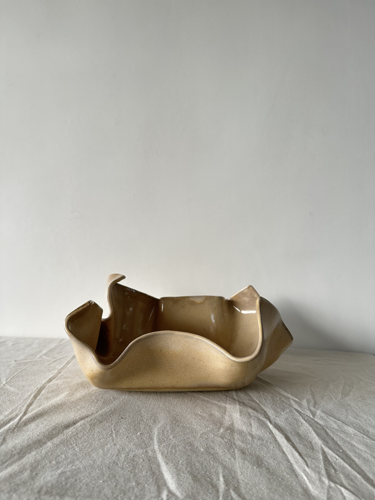
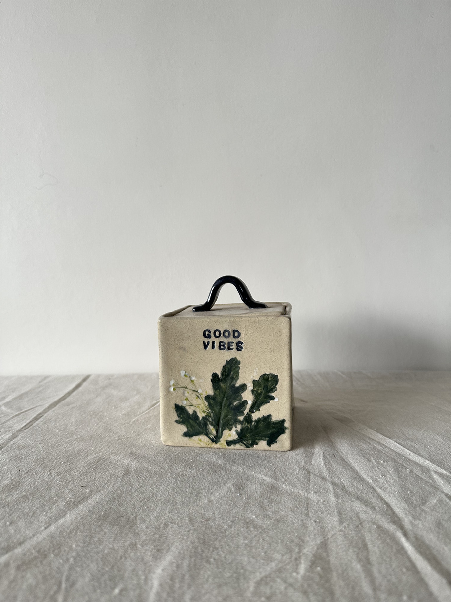

Coil built ceramics · Mumbai studio
Where roots
meet clay.
Banian Pottery is named after the banyan tree, a village's meeting place, held up by roots that spread wide instead of growing alone. Sakshi Borana's studio works the same way. It's an unhurried, hand coiled space where people come together to make things, slow down, and find each other again.
The studio, in three parts
Not a shop. A gathering
place under a roof of clay.
The Work
Coil-built pieces, each one of a kind. Every ridge and slightly uneven edge is left visible, because that's where the character of the piece actually lives.
The Workshops
Offline sessions, long courses, studio memberships and clay parties for birthdays, date nights and pretty much anything in between.
The Exhibitions
Pieces shown and shaped in front of others. Pottery as something people gather around, not just something they take home.
From the studio shelf
Every piece has a story.



I'm chaotic, and a little uneven, and I used to think that made me less serious about this craft. Now I build that unevenness into every piece. It's not a flaw to hide. It's the signature.
Sakshi Borana, Founder

Create, connect, celebrate
Two hours of complete
peace, or a little clay party.
No experience needed, just curiosity (and maybe a friend). From single leisure workshops to 10 day handbuilding and wheel courses, studio memberships, and full blown pottery parties for birthdays and date nights.
Explore workshops